Overview
This project gave us a great overview of the Rasterization Pipeline, from rasterizing a triangle with bounding boxes, to supersampling, to including transforms and colors, as well as using mipmaps. We not only familiarized ourselves with the course concepts, but also C++ synatical characters. It was a lot of fun!
Section I: Rasterization
Part 1: Rasterizing single-color triangles
In this first part, we worked with the rasterize_triangle function. We first found the position of the bounding box of the triangle by finding the maximum and minimum x and y values of the 3 points. Given the 3 points, we found the x and y line equations for the 3 lines given the 3 points p0, p1, and p2. We then looped through every pixel in the bounding box. For each of these pixels, we computed whether the given pixel is within the triangle using the three line test. If it is, we then fill the pixel with the provided color.
The runtime of this algorithm is no worse than one that checks each sample within the bounding box of the triangle because it loops through every pixel in the bounding box exactly once. Therefore it is not worse but also not better.
|
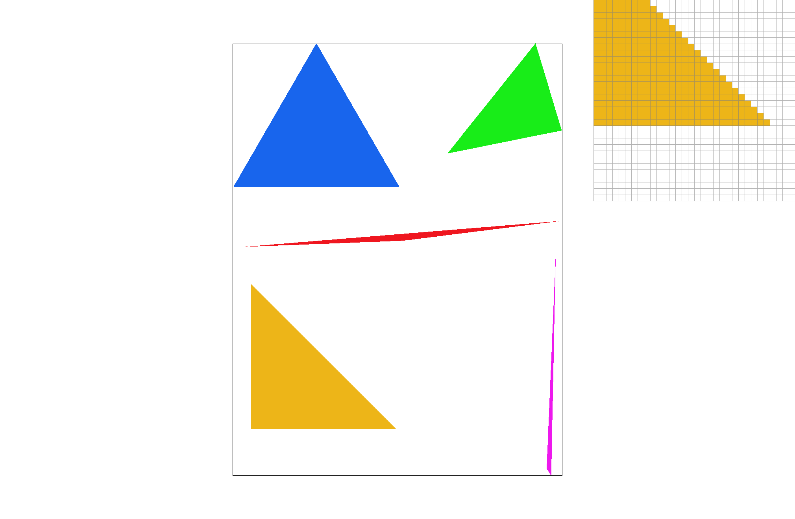
|
Part 2: Antialiasing triangles
Supersampling is an mechanism used as an antialiasing techinque. As we can see from the previous part, there can exist sampling artifacts in computer graphics such as jaggies/stair case patterns for the triangles we are trying to visualize. As a result, we implemented supersampling technique to approximate the effect of a 1-pixel box filter. We sample multiple locations within a pixel and average their values.
We used an intermediate data structure the sample buffer before writing to the buffer frame. This sample buffer was larger than the frame buffer such that multiple entries from the sample buffer averaged together mapped to one pixel in the buffer frame.
For this part, we worked in rasterizer.cpp and modified the fill_pixel, rasterize_triangle, set_sample_rate, set_framebuffer_target, and the resolve_to_framebuffer functions. In the set_sample_rate function and the set_framebuffer_target function, we resized the sample buffer from width * height to width * height * sample rate because we want to store all of our sample values before we resolve to buffer. In the fill_pixel, rasterize_triangle, and resolve_to_framebuffer function, we modified the approach from part one to account for sample rate times indexing we do for every pixel using double for loops.
By sampling every pixel more than once, we are able to create a average value that is a lot more smoothed out than simply comparing the center of each pixel. I n the example below, we see that the red triangle originally had gaps and staircase patterns. As we increased sample rate, the traingle edges became a lot smoother and continuous in comparison. Sample rate 1 has gaps and jaggies. Sample rate 4 has a smaller gap and less distinct jaggies. Sample rate 16 has no gaps and almost no jaggies.
|
|
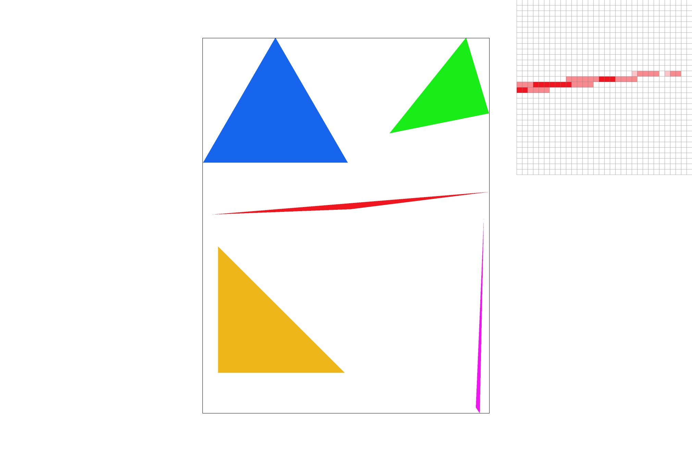
|
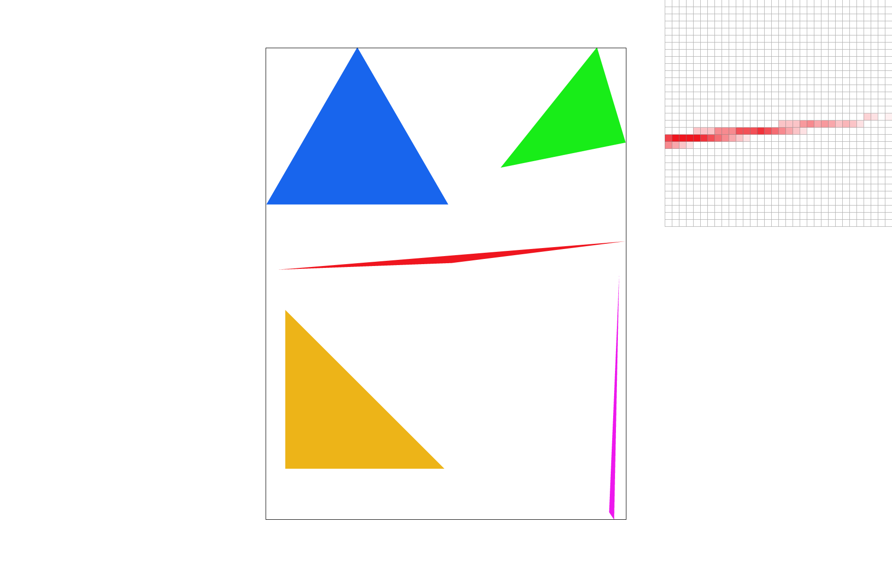
|
Part 3: Transforms
This is an updated version of the original transform with the cubeman lifting one leg up to stretch like ballerina.
|
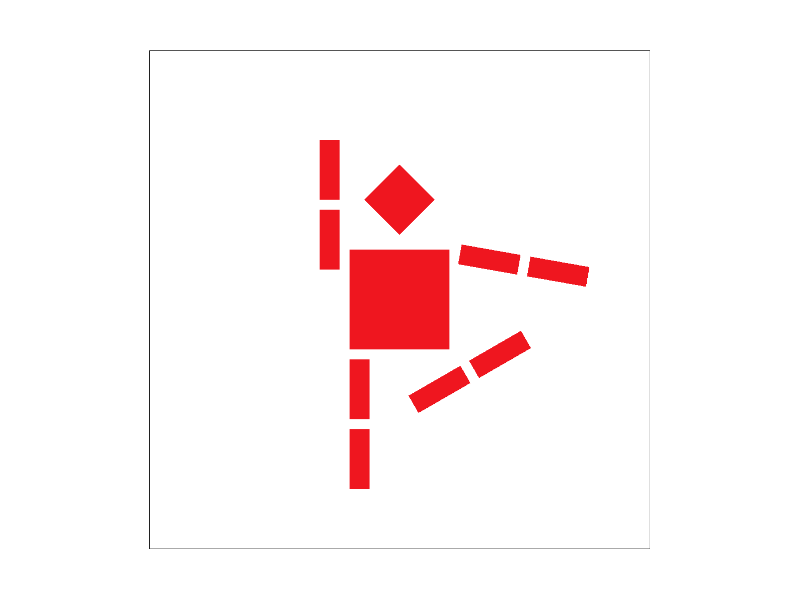
|
Section II: Sampling
Part 4: Barycentric coordinates
Barycentric coordinates are a mechanism for interpolating values inside a triangle from vertices. The values we interpolate can be coordinates given the location of the vertices. It can also be colors, texture maps, and other values representations. The value at a pixel is the weighted sum of the vertices' values. The weights are determined by the distance of this particular point to the three vertices, each of which representing a different value. The weights alpha, beta, and gamma sum to one. If the weights alpha, beta, and gamma are negative, we know that the point would be outside the triangle. From the triangle image below, we can see that each vertex is a solid color (red, green, or blue). The RGB values of pixels in this triangle are the weights (α, β, γ) calculated by their distance from each of the vertices. As we move towards the center, the pixel colors are a blended version of those 3 colors using barycentric coordinates to compute the weights of each color.

|
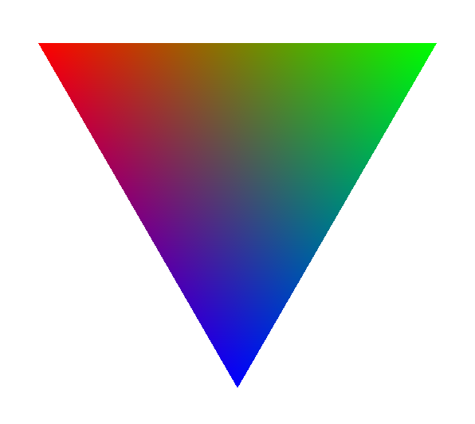
|
Part 5: "Pixel sampling" for texture mapping
Pixel sampling is an algorithm used to compute pixel values of buffer frame from texture images, mapping from texture space to screen space. Nearest pixel sampling finds the closest pixel and use that value where bilinear finds the four closested pixels and compute a weighted average based on the distance to the current location.
We implemented this portion of the project in texture.cpp and rasterize.cpp. The sample_nearest function converts a Vector2D object into x and y positions, and after bound checks, get the color of the texel to return. The sample_bilinear function first examines the current position of the Vector2D object, decide the base x,y of the 4 pixels, perform bound checks and get the texels for the 4 positions. Then, this function lerp the x direction twice horizontally and and lerp the y direction once vertically to compute the resulting color. In rasterize_triangle, we would then decide which of sample_nearest and sample_bilinear to call given the psm value.
|
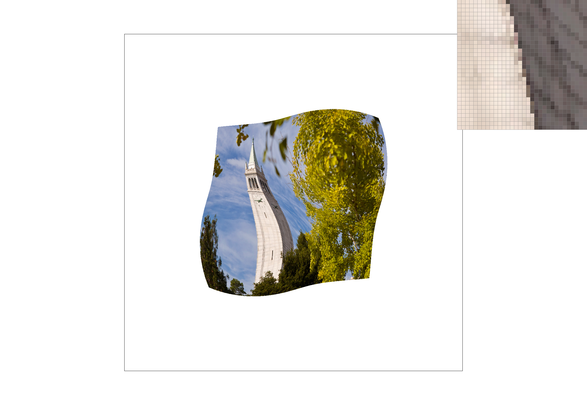
|

|
|
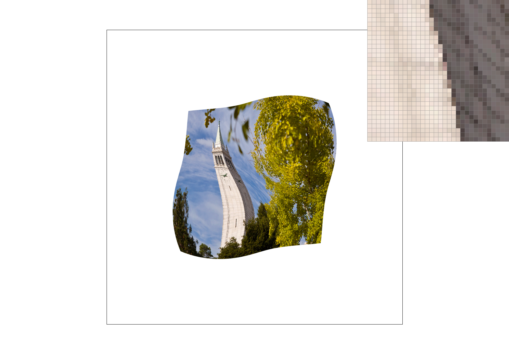
|
|
In the above example comparing nearest and bilinear samples at rate 1 and 16, we see that the edge is a lot smoother as move from sample rate of 1 to 16. This makes sense because super sampling reduces aliasing and reduces jaggies at an edge. We also see less of the staircase pattern as we move from nearest to bilinear sampling at the pixel level. From nearest, we can still see a distinct uphill incline but for bilinear, the diagonal edge has no distinct staircase-like jaggies patterns.
Part 6: "Level sampling" with mipmaps for texture mapping
Level sampling makes use of MIP maps, which are precomputed, downsampled layers of the image's rgb values. MIP maps has a hierarchical structure and would use 4/3 times the memory of the original image to store valid entries. The level sampling technique we used was Trilinear Filtering, where we compute bilinear filtering at a current level and the next level. Using the D value computed from derivatives, we then perform linear interpolation on the two biliearn filtering results.
For this section, we mainly worked with texture.cpp and rasterizer.cpp. In the rasterize_triangle function, we fill in the SampleParams struct and pass it into the tex.sample function. The sample function first evaluates the level we are at from the sample parameters. It then selects the desired pixel/level sampling technique, such as P_Nearest or P_Linear or L_Nearest or L_Linear, making use of the functions from part 5.
Pixel sampling is relatively faster than level sampling and supersampling with high sample rate. It also uses the least memory space because it does not require the storage of differnt MIP levels or a large, variable size, sample buffer. However, its antialiasing power is the weakest and can result in artifacts. On the other hand, super sampling has high antialising power but is time and space intensive because of the usage of a sample buffer and a double for loop per pixel. In comparison, level sampling uses slightly more memory (4/3 times original) compared to pixel sampling and a lot less memory compared to supersampling with a high rate. Level sampling is slower than pixel sampling because it requires two levels of the MIP map but is faster than supersampling because the levels are precomputed. The results of level sampling also contains less artifacts than pixel sampling but would not be as effective as supersampling. Thus, level sampling seems the most mediocre in terms of speed, memory usage, and antialiaing power.
|
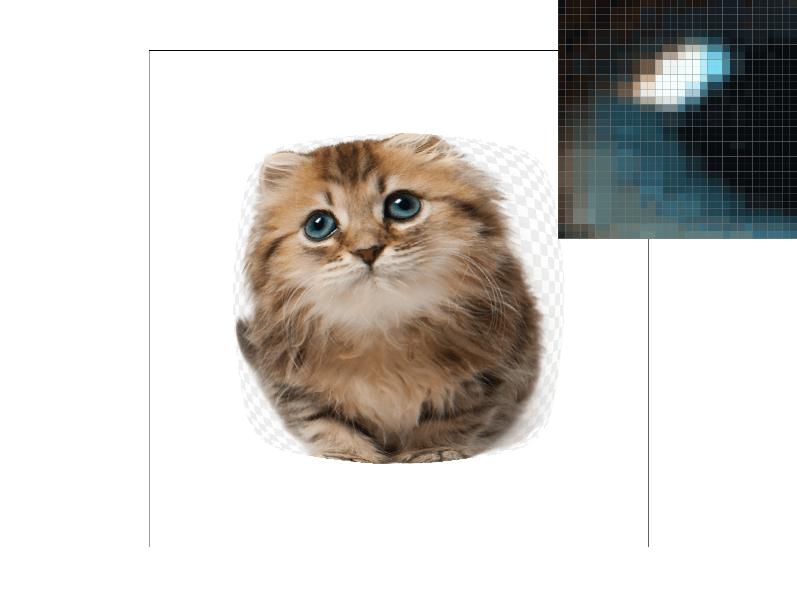
|
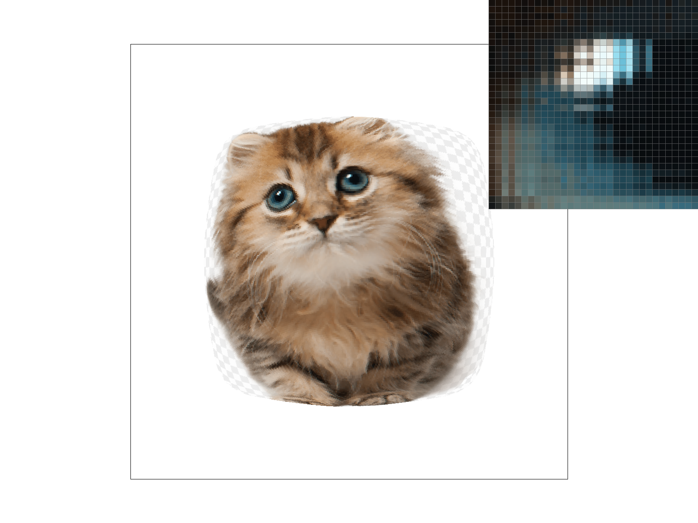
|
|
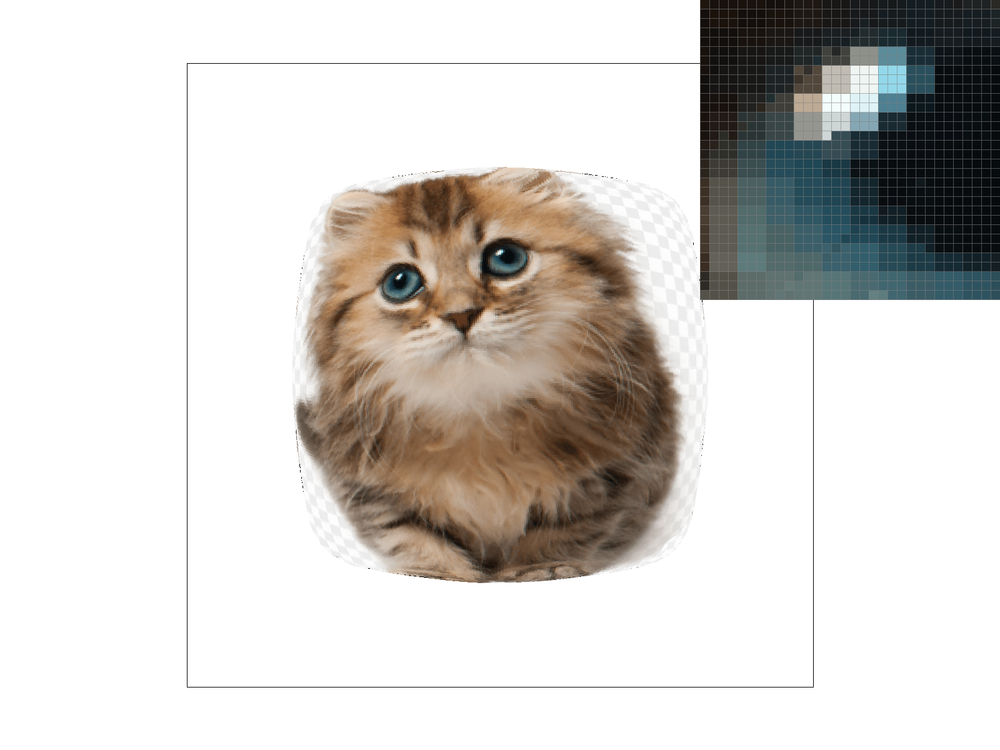
|
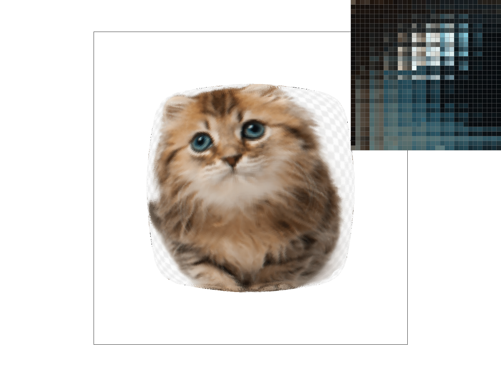
|
Section III: Art Competition
If you are not participating in the optional art competition, don't worry about this section!